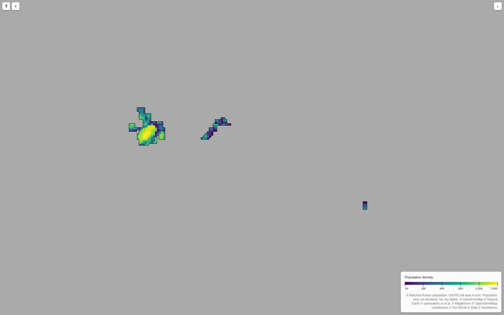

The current island layout is unchanged. Open the world map.
The tag owid-clean-layout-baseline-v1 preserves that baseline.
The supported workflow now runs from a cartogram CSV, Kontur, and Natural Earth to a resized layout,
an H3 mapping, and population-density Arrow files. It uses Julia. Tile count and country set are inputs,
not fixed constants. See owid-layout/workflow.md in the repository for commands and input formats.
This is a regional export test, not a new full-world deployment. The browser used local file interception; no H3-MON defaults were changed. City labels and border-aware fitting are not part of this workflow.
Malaysia and Brunei are near the centre. Fiji is at the lower right. Other countries are omitted from this test. Colours show population density. The grey area is empty space, not country tiles.
